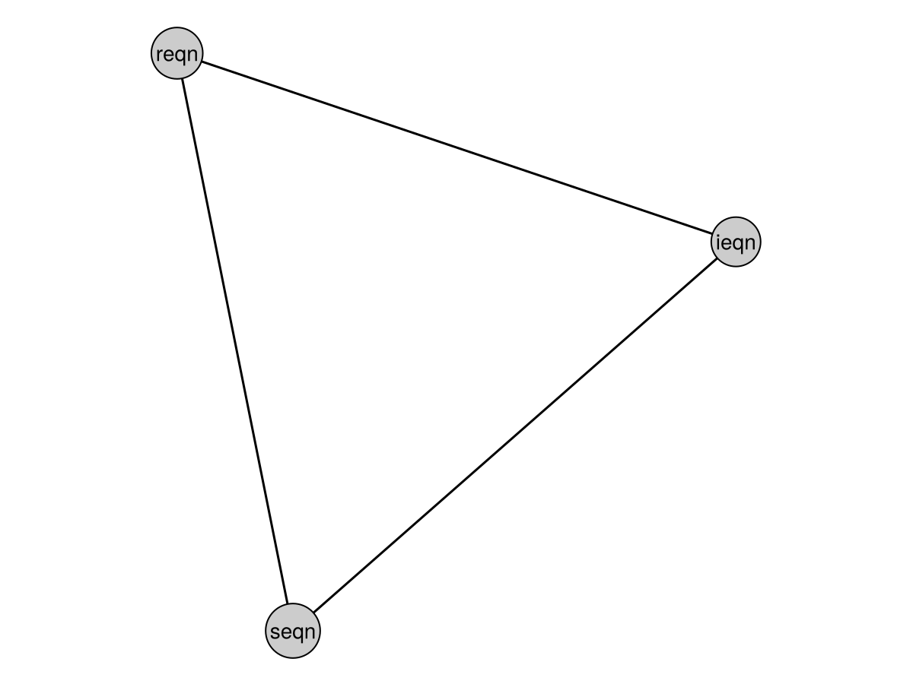

using EarthSciMLBase
using ModelingToolkit
using MetaGraphsNext
using CairoMakie, GraphMakie
@parameters t
struct SEqn <: EarthSciMLODESystem
sys::ODESystem
function SEqn(t)
@variables S(t), I(t), R(t)
D = Differential(t)
N = S + I + R
@parameters β
@named seqn = ODESystem([D(S) ~ -β*S*I/N])
new(seqn)
end
end
struct IEqn <: EarthSciMLODESystem
sys::ODESystem
function IEqn(t)
@variables S(t), I(t), R(t)
D = Differential(t)
N = S + I + R
@parameters β,γ
@named ieqn = ODESystem([D(I) ~ β*S*I/N-γ*I])
new(ieqn)
end
end
struct REqn <: EarthSciMLODESystem
sys::ODESystem
function REqn(t)
@variables I(t), R(t)
D = Differential(t)
@parameters γ
@named reqn = ODESystem([D(R) ~ γ*I])
new(reqn)
end
end
function Base.:(+)(s::SEqn, i::IEqn)::ComposedEarthSciMLSystem
seqn = s.sys
ieqn = i.sys
ComposedEarthSciMLSystem(
ConnectorSystem([
ieqn.S ~ seqn.S,
seqn.I ~ ieqn.I], s, i),
s, i,
)
end
function Base.:(+)(s::SEqn, r::REqn)::ComposedEarthSciMLSystem
seqn = s.sys
reqn = r.sys
ComposedEarthSciMLSystem(
ConnectorSystem([seqn.R ~ reqn.R], s, r),
s, r,
)
end
function Base.:(+)(i::IEqn, r::REqn)::ComposedEarthSciMLSystem
ieqn = i.sys
reqn = r.sys
ComposedEarthSciMLSystem(
ConnectorSystem([
ieqn.R ~ reqn.R,
reqn.I ~ ieqn.I], i, r),
i, r,
)
end
seqn, ieqn, reqn = SEqn(t), IEqn(t), REqn(t)
sir = seqn + ieqn + reqn
g = graph(sir)
f, ax, p = graphplot(g; ilabels=labels(g))
hidedecorations!(ax); hidespines!(ax); ax.aspect = DataAspect()
f
